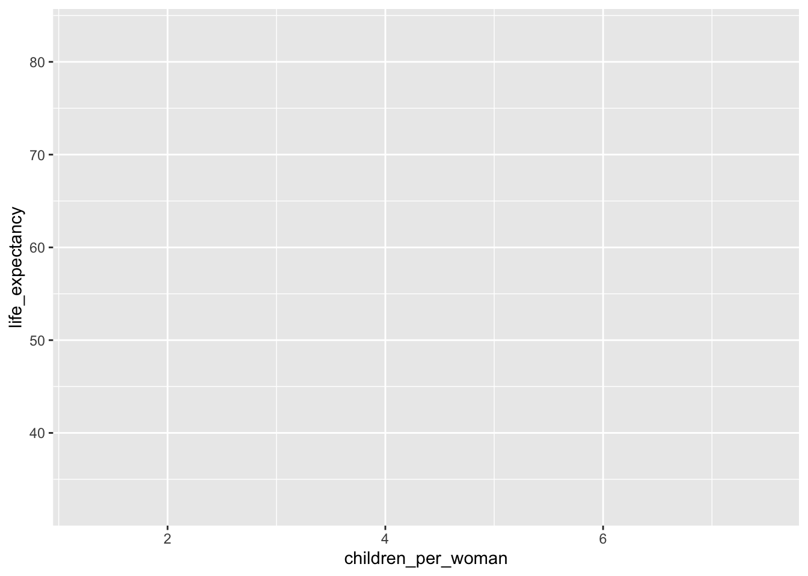
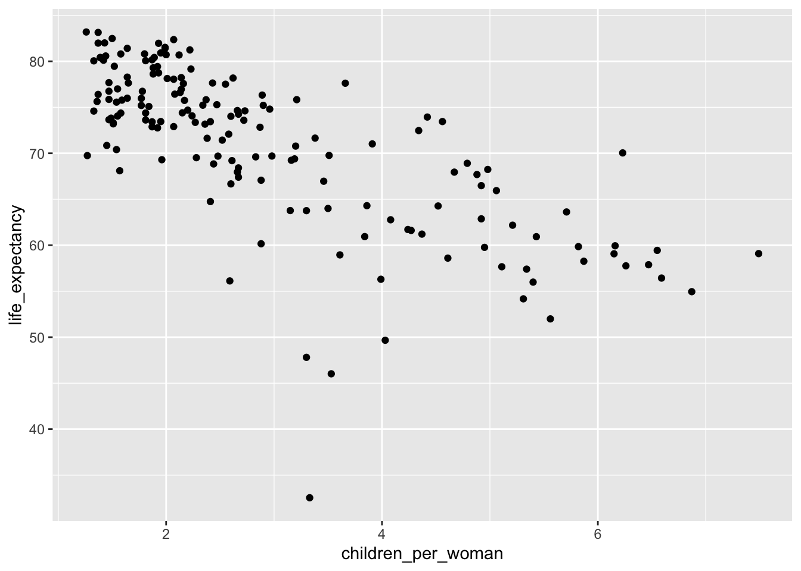
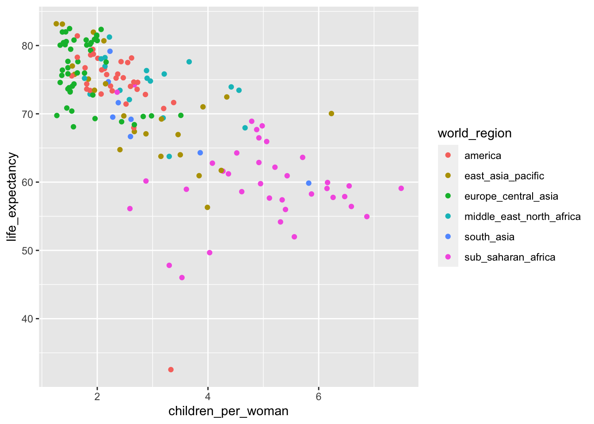
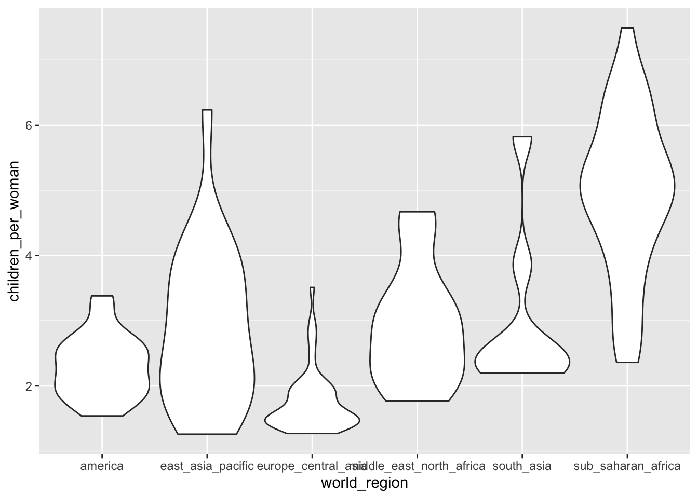
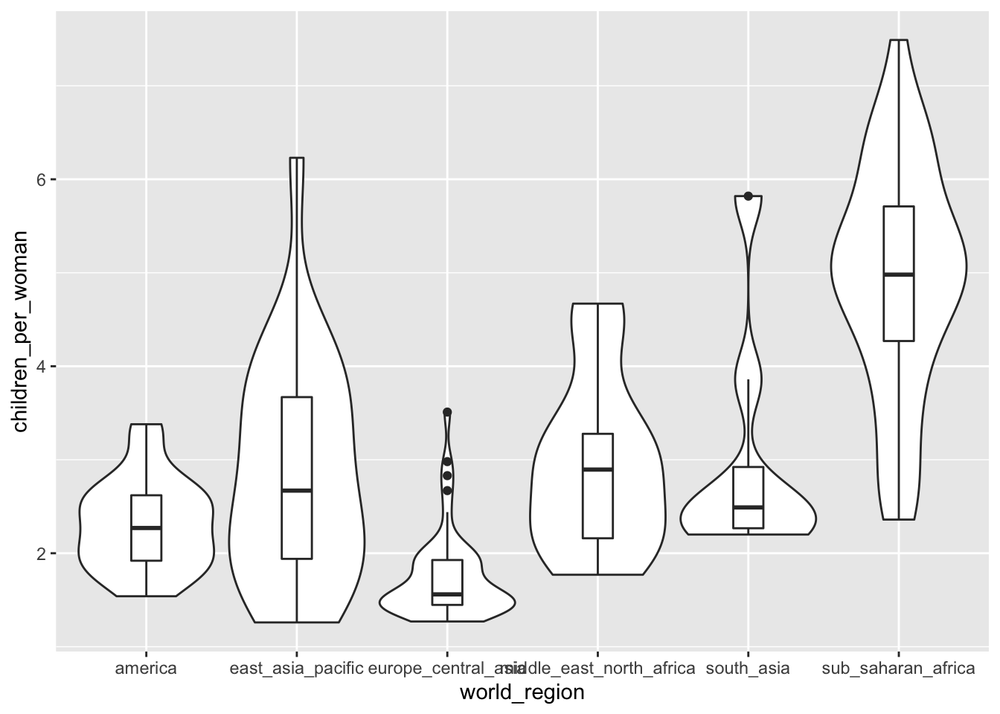

Introduction to plotting
- Be able to create basic plots
Libraries and functions
Libraries
Functions
Libraries
Functions
Purpose and aim
Be able to create basic plots to explore your data.
Loading data
If you haven’t done so yet, please load the data as follows:
gapminder <- read_csv("data/gapminder_clean.csv")Building a plot
Here we’ll learn how to build a plot, using the ggplot2 package. This package has a consistent set of grammer rules that allow you to create a plot. It needs 3 basic pieces of information:
- A data.frame with data to be plotted
- The variables (columns of
data.frame) that will be mapped to different aesthetics of the graph (e.g. axis, colours, shapes, etc.) - the geometry that will be drawn on the graph (e.g. points, lines, boxplots, violinplots, etc.)
This translates into the following basic syntax:
ggplot(data = <data.frame>,
mapping = aes(x = <column of data.frame>, y = <column of data.frame>)) +
geom_<type of geometry>()For our first visualisation, let’s try to recreate one of the visualisations from Hans Rosling’s talk. The question we’re interested in is: how much separation is there between different world regions in terms of family size and life expectancy? We will explore this by using a scatterplot showing the relationship between children_per_woman and life_expectancy.
Let’s do it step-by-step to see how ggplot2 works. Start by giving data to ggplot:
ggplot(data = gapminder)
That “worked” (as in, we didn’t get an error). But because we didn’t give ggplot() any variables to be mapped to aesthetic components of the graph, we just got an empty square.
For mappping columns to aesthetics, we use the aes() function:
ggplot(data = gapminder,
mapping = aes(x = children_per_woman, y = life_expectancy))
That’s better, now we have some axis. Notice how ggplot() defines the axis based on the range of data given. But it’s still not a very interesting graph, because we didn’t tell what it is we want to draw on the graph.
This is done by adding (literally +) geometries to our graph:
ggplot(data = gapminder,
mapping = aes(x = children_per_woman, y = life_expectancy)) +
geom_point()
Notice how geom_point() warns you that it had to remove some missing values (if the data is missing for at least one of the variables, then it cannot plot the points).
Changing aesthetics based on data
In the above exercise we changed the colour of the points by defining it ourselves. However, it would be better if we coloured the points based on a variable of interest.
For example, to explore our question of how different world regions really are, we want to colour the countries in our graph accordingly.
We can do this by passing this information to the colour aesthetic inside the aes() function:
ggplot(data = gapminder,
mapping = aes(x = children_per_woman, y = life_expectancy, colour = world_region)) +
geom_point()
aes()?
The previous examples illustrate an important distinction between aesthetics defined inside or outside of aes():
- if you want the aesthetic to change based on the data it goes inside
aes() - if you want to manually specify how the geometry should look like, it goes outside
aes()
Multiple geometries
Often, we may want to overlay several geometries on top of each other. For example, we might want to visualise a box plot together with a violin plot.
Let’s start by making a violin plot:
# scale the violins by "width" rather than "area", which is the default
ggplot(gapminder, aes(x = world_region, y = children_per_woman)) +
geom_violin(scale = "width")
To layer a boxplot on top of it we “add” (with +) another geometry to the graph:
# Make boxplots thinner so the shape of the violins is visible
ggplot(gapminder, aes(x = world_region, y = children_per_woman)) +
geom_violin(scale = "width") +
geom_boxplot(width = 0.2)
The order in which you add the geometries defines the order they are “drawn” on the graph. For example, try swapping their order and see what happens.
Notice how we’ve shortened our code by omitting the names of the options data = and mapping = inside ggplot(). Because the data is always the first thing given to ggplot() and the mapping is always identified by the function aes(), this is often written in the more compact form as we just did.
Key points
- We can build plots layer by layer
- Aesthetics can be based on data